Temporis Pro nace de la integración de dos softwares y servicios que ya estaban en funcionamiento. La nueva oferta requería una identidad propia y una definición de producto capaz de unificar sus funcionalidades y proyectar su evolución.
¿Cómo construir un sistema capaz de relacionar la información de una operación industrial y convertirla en una herramienta para gestionar su desempeño?
El desafío no consistía únicamente en visualizar indicadores, sino en conectar los elementos que componen una operación: personas, máquinas, puestos de trabajo, productos, procesos, turnos y recursos.
La exploración de usuarios y mercado permitió identificar problemas de fragmentación de información, baja visibilidad operacional y dificultades para conectar las decisiones de gestión con lo que ocurre en planta.
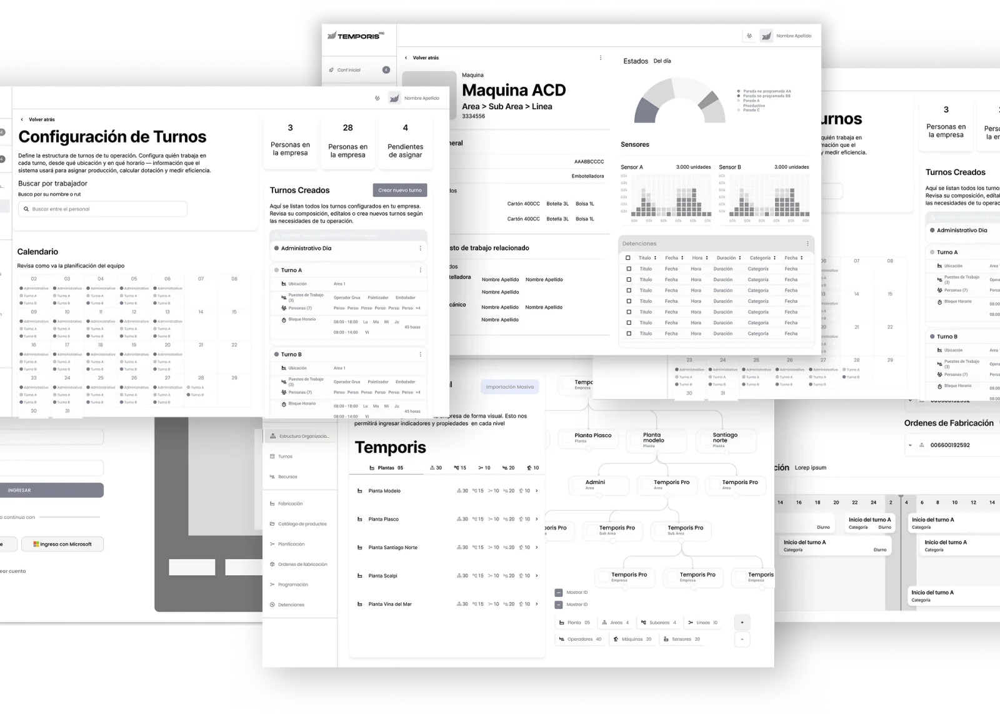
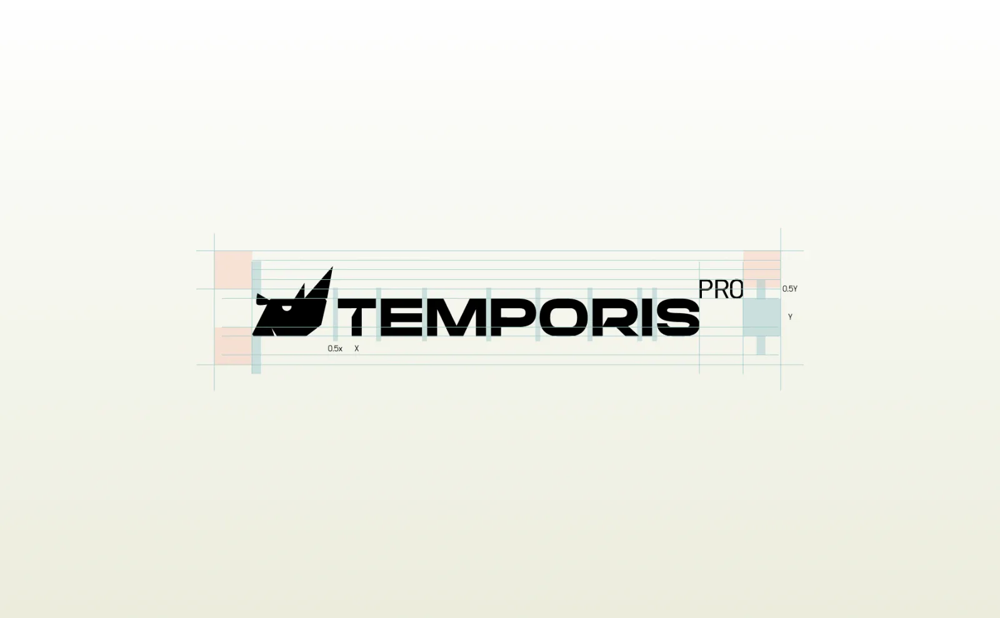
Desde marca, desarrollé el rebranding de Temporis Pro, construyendo una nueva identidad visual y un lenguaje de comunicación para representar y posicionar la oferta integrada.
Desde producto, trabajé en la definición de una plataforma concebida como un Sistema Conductor Operacional, capaz de conectar información, priorizar eventos y coordinar acciones entre producción, mantenimiento y gestión.

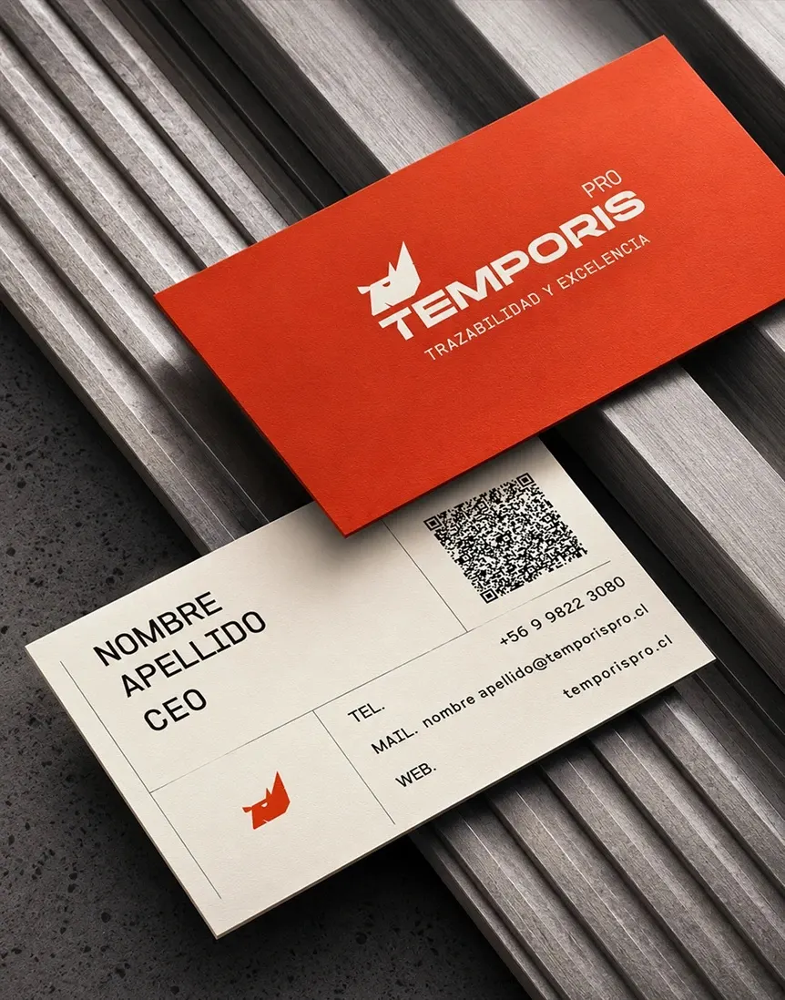
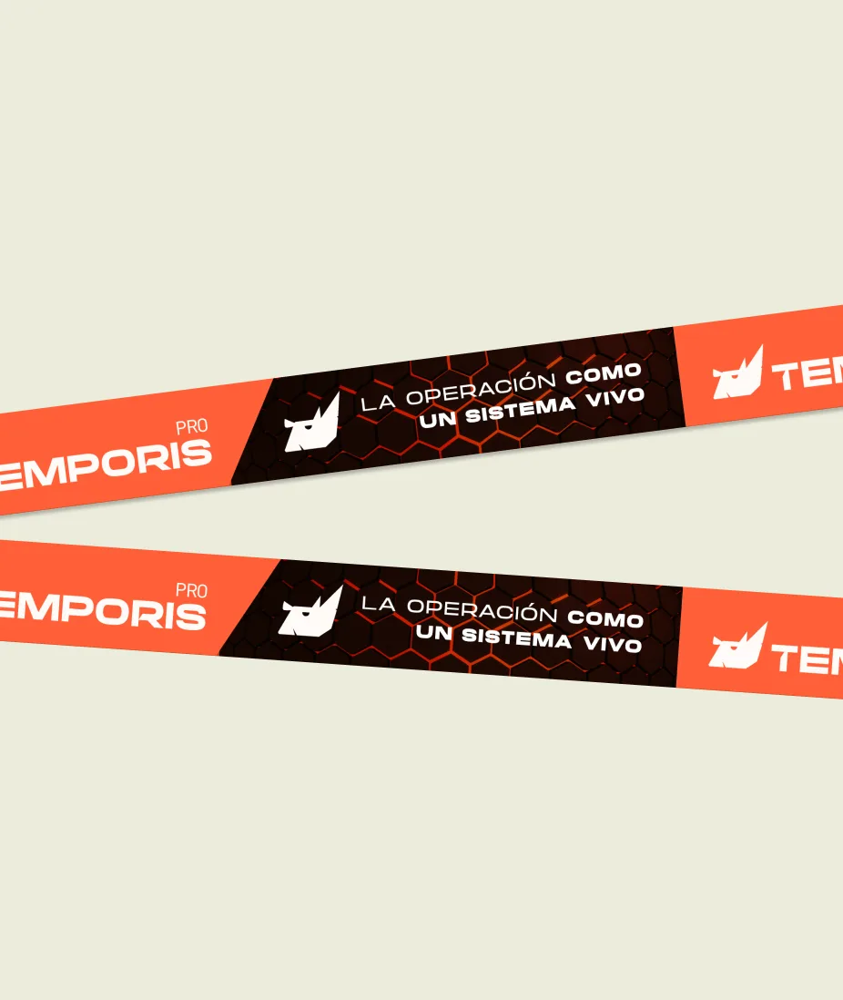
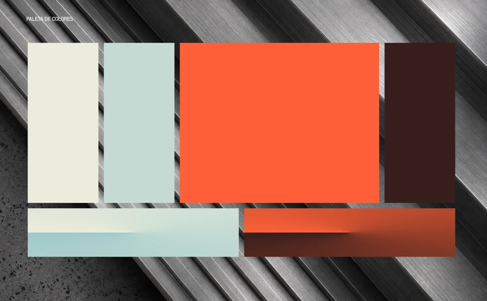
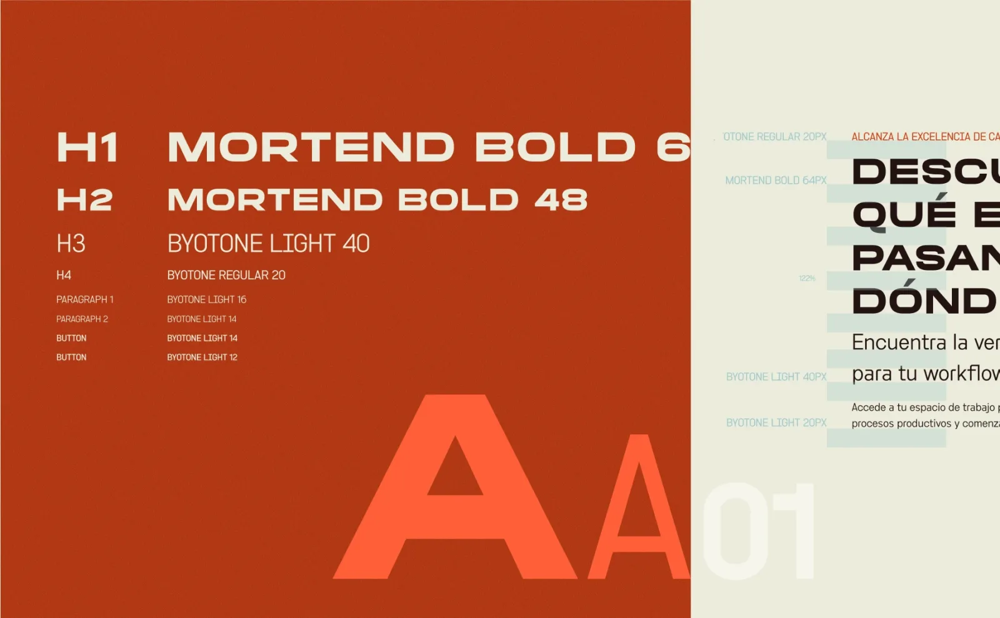
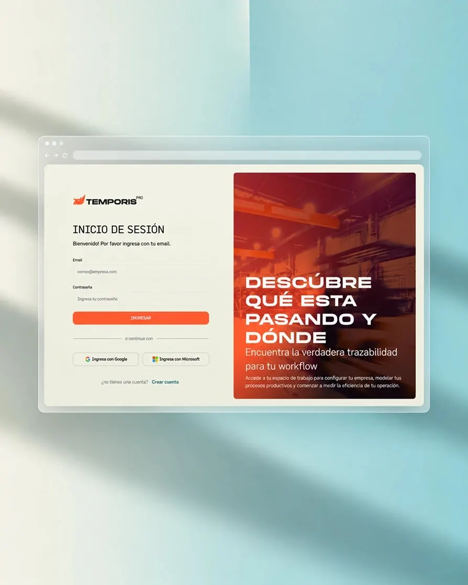
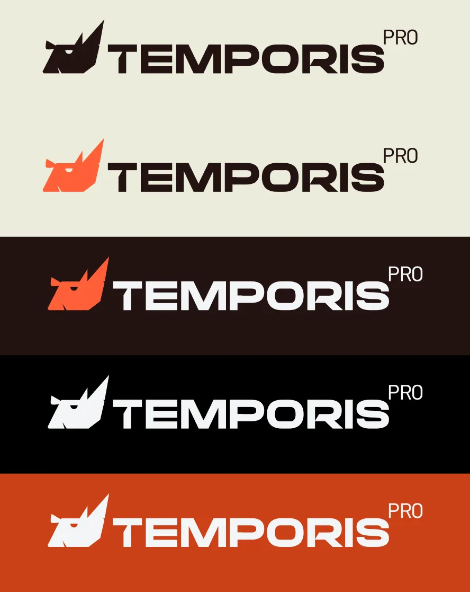
A partir de una propuesta tecnológica del líder técnico basada en un modelo de nodos, colaboré con desarrollo en su comprensión conceptual y en la representación de los componentes y relaciones de una operación industrial.
Este trabajo se tradujo en una arquitectura funcional, flujos de experiencia e interfaces para configurar plantas, gestionar recursos, registrar producción y dar seguimiento a problemas. También participé en la organización y priorización del backlog y la planificación por etapas.
El resultado fue una nueva identidad de marca y una definición integral de producto. El proyecto avanzó en estrategia y diseño, sin llegar a implementación productiva ni validación formal en terreno.
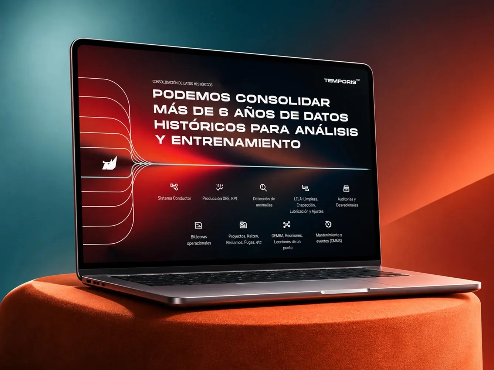


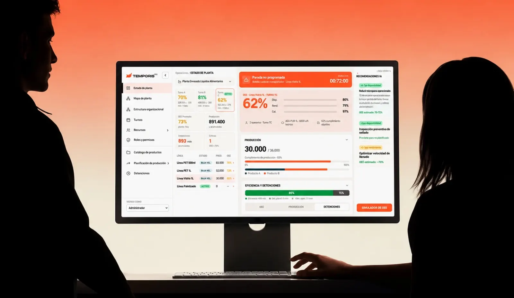